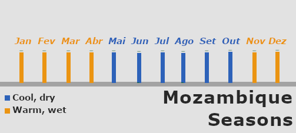

About Mozambique
Mozambique is a Portuguese-speaking coutry with over 40 others languages, located on the southeastern coast of Africa
Its territory stretches for over 2,500 kilometers along the warm Indian Ocean, which separetes the country from Madagascar
Mozambique - Google MapsThe climate is prodominantly tropical to subtropical sharped by the warm Indian Ocean current. Mainly the coutry has two seasons:
- A warm, wet season from November to April
- A cooler, dry season from May to October

Seasons in Mozambique - Touristic MozThe best time to visit Mozambique is during the dry season from May to October.
This period provides the most consistent sunny, warm weather, with clear skies and the calmest ocean conditions.
It is the ideal time for beach lounging, diving, and spotting humpback whales (which migrate through the coast from July to November).
About the Mozambican population, they are approximately 36.6 million people being more than half of that a young people.
They are very traditional and religious. Soma of the most famous dances are Marabenta, Xigubo, Tufo and Mapiko. This is more about the culture it self
So, insted of describing them, i will show you.
Tufo - Cabo DelgadoThis topic (traditional dances) is very large. If i want to know more about them youcan seek on Youtube or iven facebook for them.
Xigubo - Marracuene, MaputoHow to get in Mozambique?
Requirements
The basics requirements are:
- A valid passport (usually with at least 6 months of validity).
- A visa, eTA, or visa exemption, depending on the traveler's nationality.
- A Yellow Fever vaccination certificate, only if arriving from or transiting through a country with a risk of yellow fever.
Recommendation
Note that, the list above is only about the requirements. The recommendation is to have those:
- Travel insurance
- Return ticket
- Hotel booking or invitation letter
- Proof of sufficient funds
But the necessity depends on why, when, where, for how long, where are you coming from and etc
Visa requirements depend on your nationality. Before travelling, please check the official Mozambique eVisa or contact the nearest Mozambican embassy or consulate.